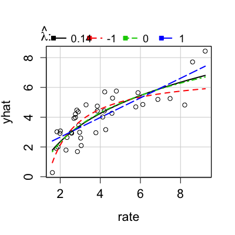

inverseResponsePlot(model, lambda = c(-1, 0, 1), robust = FALSE, xlab = NULL, ...) inverseResponsePlot(model, lambda = c(-1, 0, 1), robust = FALSE, xlab = NULL, labels = names(residuals(model)), ...) invResPlot(model, ...)
lm regression objectNULL, it is constructed by the function.invTranPlot and showLabels for arguments.invTranPlot and then to
plot.For a lm model, draws an inverse.response plot with the response Y on the
vertical axis and the fitted values Yhat
on the horizontal axis. Uses nls to
estimate lambda in the function
Yhat = b0 + b1(Y)^(lambda).
Adds the fitted curve to the plot.
invResPlot is an alias for inverseResponsePlot.
As a side effect, a plot is produced with the response on the horizontal
axis and fitted values on the vertical axis.
Several lines are added to be plot as
the ols estimates of the regression of Yhat on
Y^(lambda),
interpreting lambda = 0 to be natural logarithms.
Numeric output is a list with elements lambdaEstimate of transformation parameter for the response RSSThe residual sum of squares at the minimum if robust=FALSE. If robust = TRUE, the value of Huber objective function is returned.
Fox, J. and Weisberg, S. (2011) An R Companion to Applied Regression, Second Edition, Sage.
Pendergast, L, and Sheather, S. (in press). On sensitivity of response plot estimation of a robust estimation approach. Scandinavian Journal of Statistics.
Weisberg, S. (2005) Applied Linear Regression, Third Edition, Wiley, Chapter 7.

lambda RSS 1 0.1351 31.58 2 -1.0000 35.46 3 0.0000 31.64 4 1.0000 33.69